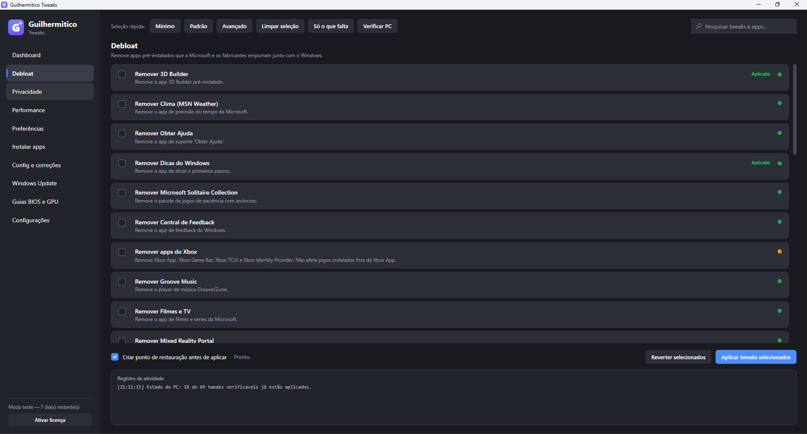
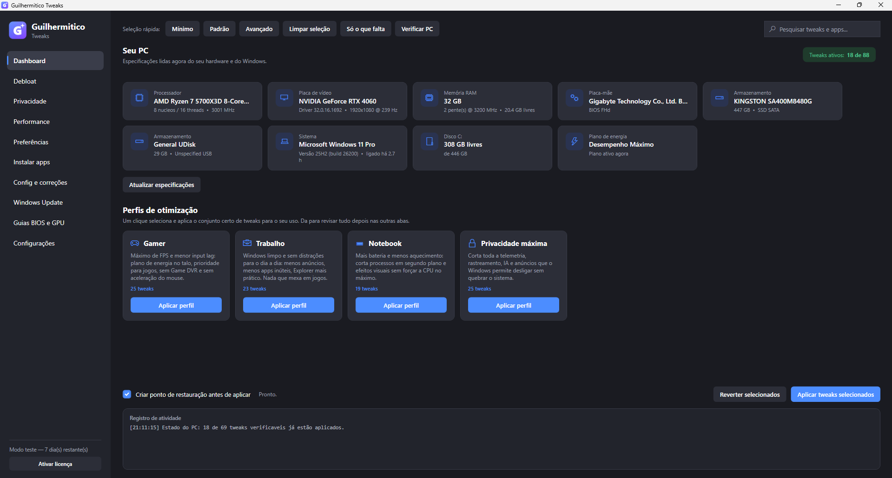
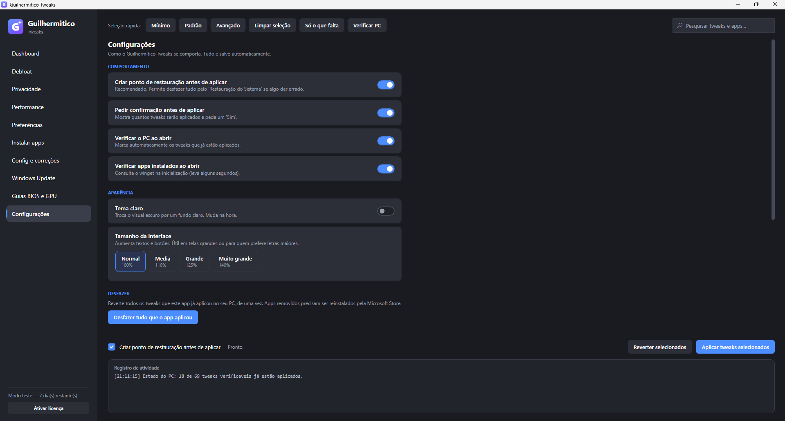
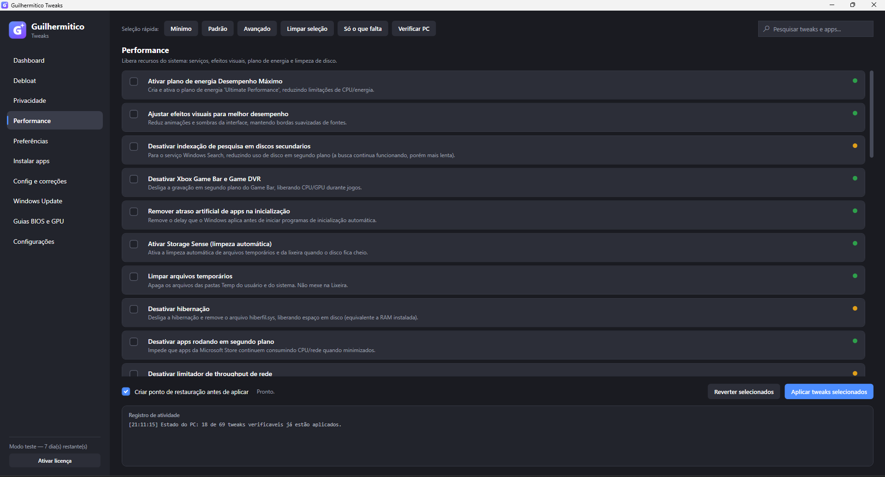

Windows 10 e 11 · 64 bits
Tira telemetria, propaganda no Menu Iniciar, apps que você nunca abriu e travas que roubam FPS. Cada mudança é explicada em português, tem botão de desfazer, e o app cria um ponto de restauração antes de encostar no sistema.
Licença pessoal
Pagamento único · preço de lançamento
Por dentro
Sem linha de comando, sem arquivo .bat, sem janela preta. Cada ajuste tem nome e explicação em português, e a bolinha do lado direito diz o quanto ele mexe no sistema.




O que ele faz
Telemetria, ID de publicidade, Cortana, Recall, Copilot, sugestões no Iniciar e anúncios na tela de bloqueio. Cada item com uma frase dizendo o que muda.
Game DVR desligado, prioridade de multimídia, aceleração do mouse fora, plano de energia no talo, apps em segundo plano barrados.
Apps pré-instalados, atalhos promocionais, OneDrive e serviços que só ligam para a nuvem. Você escolhe item por item, ou usa um perfil.
O app cria o ponto e confere se foi mesmo criado. Se falhar, ele pergunta antes de continuar em vez de seguir no escuro.
Ele lembra exatamente o que aplicou. Um botão devolve o Windows ao estado anterior, sem precisar caçar o que foi mudado.
Reparo de arquivos do sistema, reset de rede, reset do Windows Update, limpeza de disco e instalação de programas — tudo em um lugar.
Comparação honesta
Se você é técnico e não se incomoda com PowerShell, o WinUtil resolve e é grátis. O que você paga aqui é a diferença de cuidado: português, instalador, volta atrás e alguém para chamar.
| Guilhermitico | Script grátis (WinUtil) | "Otimizador" de anúncio | |
|---|---|---|---|
| Em português, do começo ao fim | sim | não | às vezes |
| Instala como programa, com atalho | sim | script | sim |
| Ponto de restauração verificado | sim | parcial | não |
| Desfazer tudo que foi aplicado | sim | item a item | não |
| Explica o que cada ajuste faz | sim | resumido | não |
| Vende "limpeza de registro" que não existe | nunca | nunca | é o negócio dele |
| Preço | R$ 47 | grátis | assinatura |
Planos
Perguntas frequentes
Todo programa que mexe no sistema tem algum risco — quem disser o contrário está mentindo. Por isso o app cria um ponto de restauração e confere se ele foi mesmo criado antes de aplicar qualquer coisa, marca em vermelho os ajustes mais agressivos, e guarda tudo que fez para desfazer depois. Os ajustes de risco alto ficam de fora dos perfis: só são aplicados se você marcar um por um.
Não. Esse aviso azul ("O Windows protegeu o computador") aparece em todo instalador que ainda não tem certificado de assinatura, que é um selo pago. Clique em Mais informações e depois em Executar assim mesmo. Se preferir, passe o instalador no VirusTotal antes — é o que eu faria no seu lugar.
Para ter certeza de que o arquivo que você baixou é o original, abra o PowerShell na pasta
do download e rode Get-FileHash GuilhermiticoTweaks-Setup.msi. O
resultado tem que ser exatamente este:
453b73b6715eefb9d9a0e9e8a7ce190f7a3fd13c80fa40f1ff89b1b1884073fc
A licença pessoal é para o seu computador. Se formatar, dá para ativar de novo com a mesma chave — ela não "queima". Se você conserta PCs de outras pessoas, a licença certa é a de técnico.
Depende do seu PC. Em máquina limpa e potente, a diferença é pequena. Em PC cheio de programa em segundo plano, notebook com pouca memória ou Windows de fábrica com bloatware, a diferença aparece — principalmente em travadas e tempo de resposta, mais do que no número médio de FPS. Ninguém sério promete número exato.
São 7 dias com o app inteiro liberado, antes de pagar — e o app nunca para de funcionar: depois disso ficam grátis o Debloat, a instalação de programas e o botão de desfazer. Use, aplique, desfaça, veja se serve. Se depois da compra algo não funcionar como está escrito aqui, escreva para guirodrigues2080@gmail.com.
Não para os ajustes: eles rodam offline. A internet só é usada para instalar programas pela aba de apps e para buscar atualização do próprio Guilhermitico.